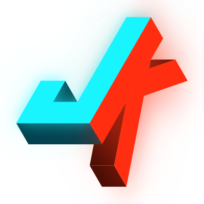

CabinsUnofficial fan-made map. Not affiliated with, endorsed by, or sponsored by MADFINGER Games or GZW Tac Map. Markers and camp ratings can be out of date or wrong, so always check in game.
Patch 0.5 "Rogue Ops" · last updated .
Grid: 1 square = 100 m, 10 squares = 1 km. Right-click the map to copy coordinates.
Planned for a Lamang Recovery Initiative player: walk legs up to 800 m, heli hops between LZs for longer gaps, unload at COPs/LZs at least every 10 stops; skips Ground Zero, "bad" camps and other factions' LZs.
Source and full credits: github.com/jkghub1/gzw-map. Content owners can request changes or removal via an issue there.